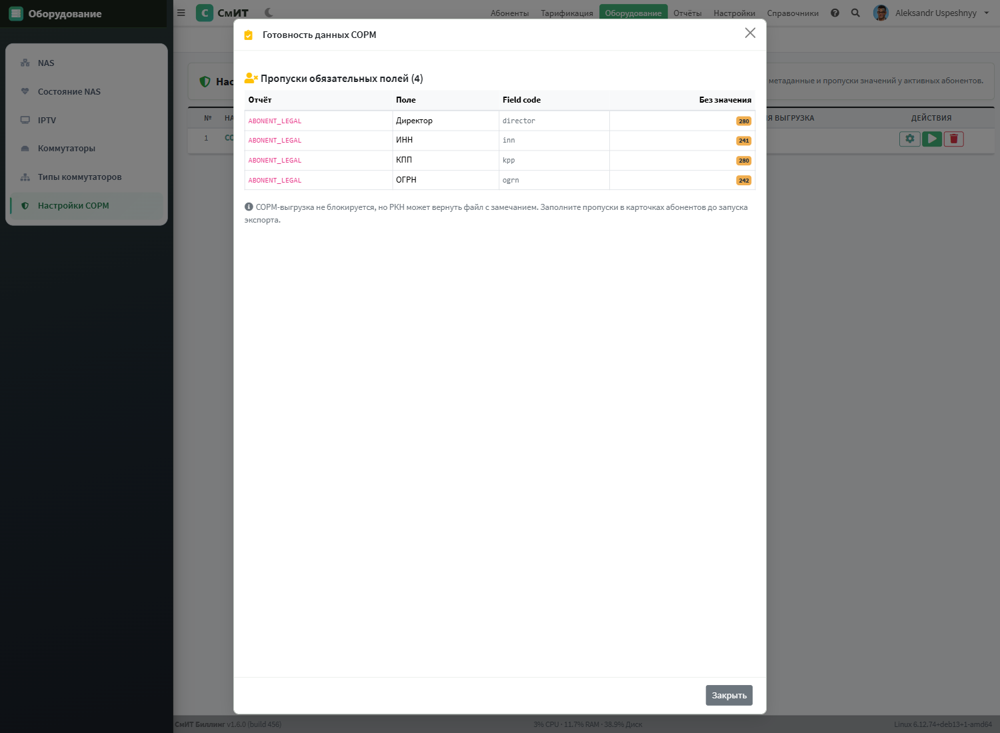
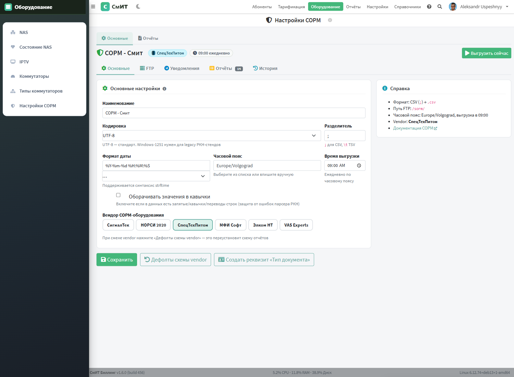
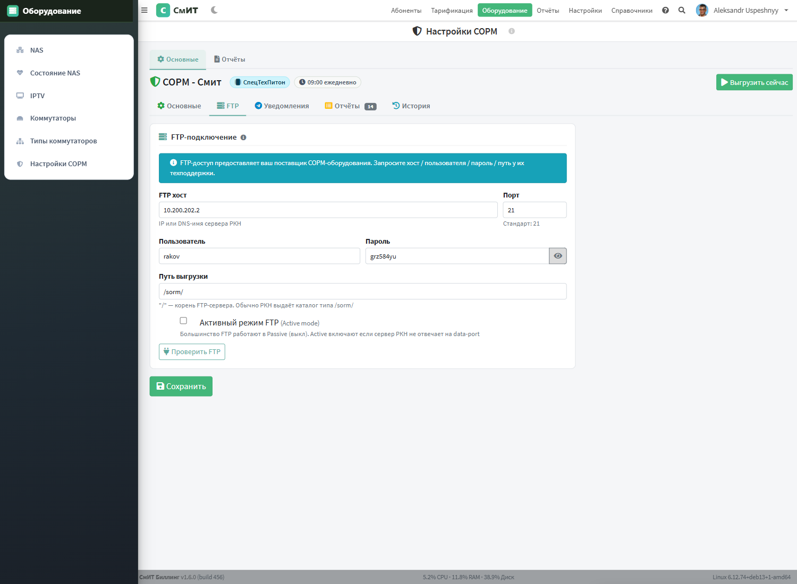
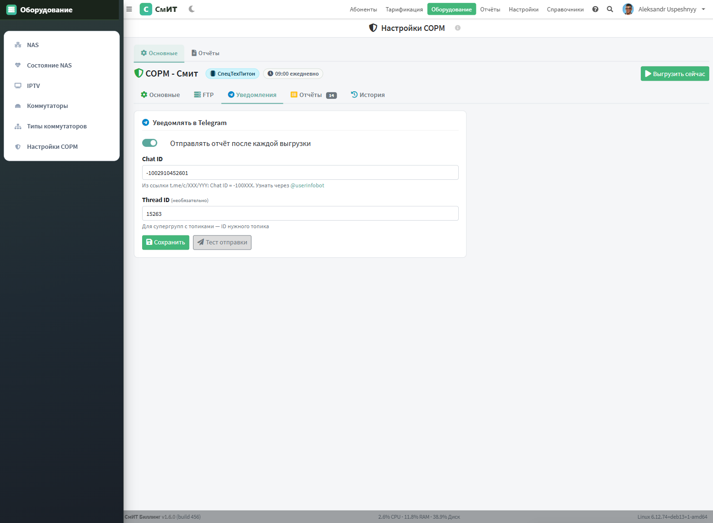
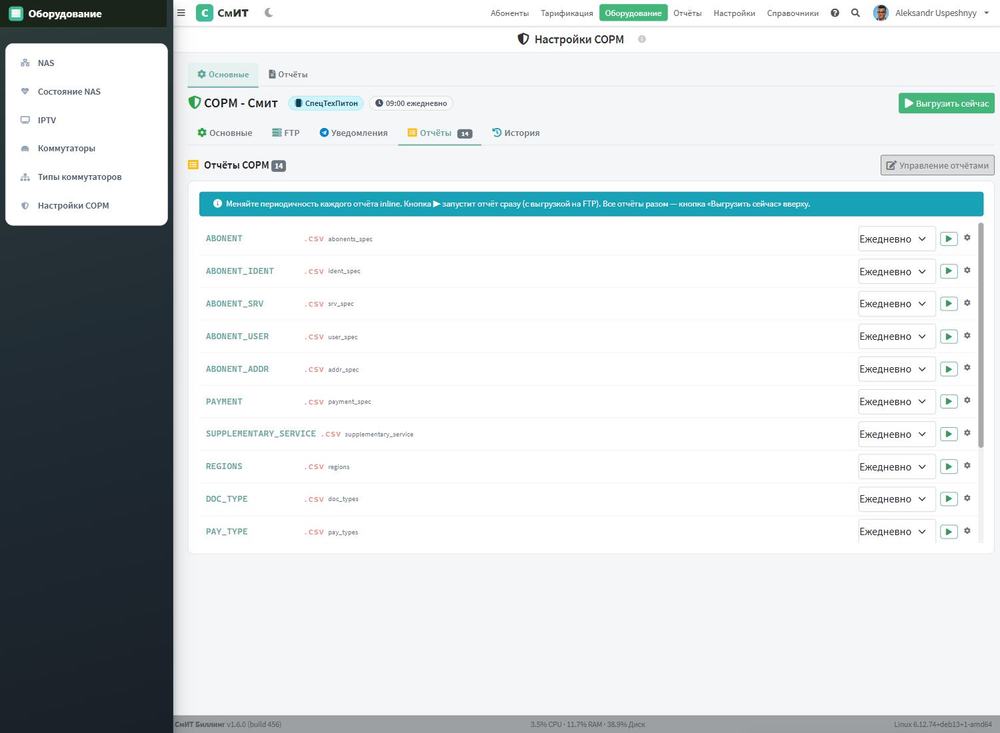
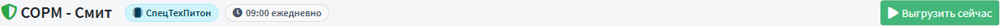
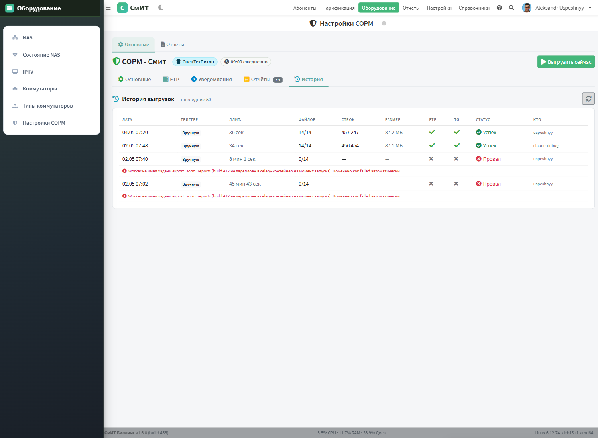

Интеграция с СОРМ3
Интеграция с системами оперативно-розыскных мероприятий (СОРМ) реализована в соответствии с Приказом Минкомсвязи России № 573 от 29.10.2018, устанавливающим требования к «техническим и программным средствам информационных систем, содержащих базы данных абонентов оператора связи».

Содержание страницы
- Принцип работы
- Интегрированные решения
- Ожидающие интеграции
- Настройка подключения
- Отчёты и SQL
- Расписание автоматической выгрузки
- Админка: выгрузка на сервера РКН
- Вендоры и вендор-паки
- Управление отчётами
- СОРМ-метаданные UserAttributes
- Pre-flight валидация перед выгрузкой
- Дубликаты атрибутов и команда merge
- REST API проверки готовности
- Схемы настройки

Принцип работы
Система СмИТ Биллинг 3.0 не подключается напрямую к центрам оперативного управления ФСБ. Вместо этого используются сторонние сертифицированные решения, выступающие посредниками между биллинговой системой и органами.
Выгрузка данных реализована как Celery-задача и передаётся в базы данных СОРМ-систем по протоколу FTP в формате CSV и его модификациях:
- Разделитель полей — точка с запятой (
;). - Текстовые значения — в кавычках.
- Кодировка — UTF-8 или Windows-1251 (в зависимости от требований СОРМ-системы).
- Расписание выгрузки — настраивается (обычно каждые 5-15 минут).
Выгружаемые данные включают:
- Персональные данные абонентов (ФИО, паспортные данные, адрес регистрации).
- Данные об услугах и договорах.
- IP-адреса и сессии подключения (логин, начало/конец сессии, NAT-трансляции).
- Данные о платежах и балансе.
Интегрированные решения
С рядом поставщиков СОРМ-оборудования отлажены и протестированы интегрированные решения. Интеграция включает настроенные шаблоны выгрузки, протоколы передачи и форматы данных, соответствующие требованиям конкретного производителя.
Ожидающие интеграции
СОРМ «Якорь» (компания НЕОС) — находится в процессе интеграции. Планируется поддержка стандартного протокола обмена данными. Для получения информации о статусе интеграции обращайтесь в техническую поддержку.
Настройка подключения
Содержание раздела
Перейдите в раздел Оборудование → Настройки СОРМ (/admin/equipment/sorm_list/) и нажмите «+ Добавить». Откроется модальное окно с формой создания новой конфигурации — без перехода на отдельную страницу.
Модальное окно «Добавить настройку СОРМ»
Форма разделена на 4 секции и содержит подсказки (серая иконка i рядом с подписью каждого поля) — наведите курсор для пояснения значения и формата.

Tooltip-подсказка (пример для поля «Хост»):

Секции и поля модалки
| Секция | Поле | Описание / подсказка из tooltip |
|---|---|---|
| Основные | Наименование * | Произвольное имя конфигурации, используется в списке и в логах. Пример: «СОРМ-3 регион Волгоград» или «СОРМ резервный» |
Вендор оборудования * | Поставщик СОРМ-3 системы: СигналТек, НОРСИ 2020, СпецТехПитон, МФИ Софт, Элком НТ, VAS Experts. Влияет на список и формат отчётов | |
| FTP-сервер | Хост | IP-адрес или DNS-имя FTP-сервера, куда заливаются CSV-файлы. Если пусто — выгрузка только локально, без отправки |
Порт | TCP-порт FTP. Стандартный — 21. Меняйте только если приёмная сторона использует нестандартный порт | |
Пользователь | Имя FTP-аккаунта, выданное оператором СОРМ для загрузки файлов | |
Пароль | Пароль FTP-аккаунта. Хранится в БД в открытом виде, доступ к настройкам — только администратору | |
Каталог | Путь к каталогу на FTP, куда сохраняются файлы. По умолчанию /. Указывается относительно корня FTP-аккаунта | |
Активный режим | Активный FTP (PORT) — соединение для данных открывает сервер. Пассивный (PASV, по умолчанию) — клиент. Включайте только если приёмная сторона требует именно PORT | |
| Формат файлов | Разделитель | Символ-разделитель колонок в CSV. Стандарт СОРМ-3 — точка с запятой ;. Для табуляции — \t |
Кодировка | UTF-8 — современный стандарт. Windows-1251 — для старых СОРМ-приёмников, не понимающих UTF | |
Формат даты | Шаблон вывода даты/времени по правилам Python strftime. По умолчанию %Y-%m-%d %H:%M:%S | |
Заключать в кавычки | Если включено — каждое значение оборачивается двойными кавычками. Включайте только если приёмник этого требует | |
| Расписание | Часовой пояс | Зона из базы IANA (Europe/Volgograd, Europe/Moscow, Asia/Yekaterinburg и т. д.). Время выгрузки и метки в файлах считаются по этому поясу |
Время выгрузки | Когда (по указанному поясу) запускается ежедневная выгрузка. Пустое поле — автозапуск отключён, доступен только ручной запуск кнопкой ▶ |
/admin/equipment/sorm_list/<id>/) — там можно создать отчёты, запустить «Первоначальную настройку» и проверить готовность данных.
Отчёты и SQL
Каждая СОРМ-запись содержит список отчётов — это именованные SQL-запросы, результат которых выгружается в CSV и отправляется на FTP.
Для каждого отчёта задаются:
- Наименование — произвольное название отчёта
- Префикс файла — начало имени файла на FTP (например
abonents→ файлabonents_20260315_143000.csv) - Расширение файла — по умолчанию
csv - SQL запрос — произвольный SELECT к базе данных биллинга. Первая строка результата станет заголовком CSV
- Периодичность — расписание автоматической выгрузки
Стандартные отчёты СОРМ-3
При нажатии кнопки «Первоначальная настройка отчётов» создаются 13 стандартных отчётов формата СОРМ-3:
| Префикс файла | Описание | Формат |
|---|---|---|
ABONENT | Абоненты (ФИО, договор, статус, тип) | SORM-3: IDENT, ACTUAL_NAME, STATUS, NETWORK_TYPE |
ABONENT_IDENT | Идентификаторы (логин, IP, MAC) | IP в hex (uf_ip2hex), маска FFFFFFFF |
ABONENT_SRV | Услуги абонентов | ID услуги, дата начала, договор |
ABONENT_USER | Учётные записи | USER_NUMBER, USER_NAME |
ABONENT_ADDR | Адреса подключений | CITY, STREET, BUILDING, APARTMENT |
PAYMENT | Платежи | Сумма, телефон, адрес, тип |
SUPPLEMENTARY_SERVICE | Каталог услуг | MNEMONIC, скорость в описании |
REGIONS | Регионы | ID=3, ООО "СМИТ" |
DOC_TYPES | Типы документов | Из USER_ATTRIBUTES |
PAY_TYPES | Типы оплаты | ЮKassa, Wallet One, SberPay, Касса, QIWI |
IP_PLAN | IP-план | IP в hex, маска в hex, REGION_ID=3 |
IP_GATEWAY | IP шлюзов | GATE_ID, IP hex, порт |
GATEWAY | Шлюзы (NAS) | GATE_ID, описание, тип=7 |
uf_ip2hex(text) — IP в шестнадцатеричный формат,
uf_mask2hex(int) — маска сети в hex,
uf_date2sorm(timestamp) — дата в формате YYYY-MM-DD HH:MI:SS.
Разделитель полей: ; (точка с запятой).
Соответствие приказу Минкомсвязи №573 (актуально на 02.06.2026)
После полной переработки в июне 2026 года выгрузка приведена в строгое соответствие Приказу №573 от 29.10.2018 (с изменениями Приказа Минцифры №630 от 12.07.2023).
billing/services/sorm_prikaz_573.py — там для каждой из 13 таблиц СОРМ-3 собирается полный SQL с правильными именами полей, кодами и форматами.
Ключевые требования Приказа №573
| Параметр | Ранее | Стало (Приказ №573) |
|---|---|---|
| Имена полей | lowercase | UPPERCASE |
| Расширение файлов | .csv | .txt |
| REGION_ID | 3 | 1 (один оператор, без филиалов) |
| NETWORK_TYPE | — | 4 (стационарные сети передачи данных) |
| IDENT_TYPE | — | 5 (DATA NETWORK) |
| ABONENT_TYPE | строки "individual"/"legal" | 42 (физ.) / 43 (юр.) |
| STATUS | строки "active"/"blocked" | 0 (активный) / 1 (неактивный) |
| PAYMENT_TYPE | внутренние коды биллинга | коды 80–89 по §3.10 приказа |
| TIMESTAMP | локальная зона | UTC в формате YYYY-MM-DD HH24:MI:SS |
| MAC | aa:bb:cc:dd:ee:ff | 12 hex uppercase без разделителей |
| IPv4 | текст | 8 hex uppercase через uf_ip2hex(host(...)) |
| Период истории | текущие активные | 3 года (2023-06-01 → 2026-06-01) |
| ABONENT_LEGAL | отдельный файл | удалён (поля юр.лиц в основном ABONENT) |
| ABONENT_USER | отдельный файл | исключён (у нас нет юр.лиц с несколькими Users) |
Маппинг PAYMENT_TYPE (коды 80–89)
Внутренние op_type и operator_name биллинга мапятся в коды приказа функцией _payment_type_expr в sorm_prikaz_573.py:
| Код | Тип платежа | Что попадает в эту категорию |
|---|---|---|
| 80 | Электронные деньги / банковский перевод | YooKassa, W1, банковские выписки ([txn:...], [bank_op:...]) |
| 81 | Наличные средства | — |
| 82 | Терминал моментальных платежей | — |
| 83 | Центр обслуживания клиентов | operator_name='kassa', op_type 7/9 (приход через ЦОК / корректировка) |
| 84 | Снятие со счёта другого абонента | — |
| 85 | Скретч-карта (express-pay) | — |
| 86 | Невозможно определить тип | прочее |
| 87 | Бонусные начисления | — |
| 88 | Сторно (отмена платежа) | — |
| 89 | Перенос остатка | — |
Текущий набор отчётов (12 файлов)
В рабочем наборе сейчас 12 отчётов. ABONENT_USER убран (у нас нет юр.лиц с несколькими Users — файл всегда пустой). ABONENT_LEGAL удалён (поля юр.лиц перенесены в основной ABONENT).
| Префикс | Полей | Содержит |
|---|---|---|
ABONENT | 37 | Все абоненты (физ. + юр.) с полями ИНН, БАНК и др. |
ABONENT_IDENT | 45 | Идентификаторы абонента (логин, MAC, IPv4 hex) |
ABONENT_SRV | 10 | Услуги абонента (БЕЗ Обещанного платежа и комиссий) |
ABONENT_ADDR | 19 | Адреса (структурированные) |
PAYMENT | 12 | Все приходы за 3 года с PAYMENT_TYPE кодами 80–89 |
REGIONS | 5 | Справочник операторов (с BEGIN_TIME/END_TIME) |
SUPPLEMENTARY_SERVICE | 4 | Каталог услуг |
PAY_TYPE | 5 | Справочник типов платежей 80–89 |
DOC_TYPE | 5 | Справочник типов документов с OPERATOR_ID |
IP_PLAN | 11 | План IP-адресации |
IP_GATEWAY | 6 | IP-шлюзы |
GATEWAY | 7 | Шлюзы (NAS) |
Исправления качества данных в SQL
По замечаниям куратора СОРМ от 02.06.2026 в SQL добавлены:
- DETACH fallback —
COALESCE(DISABLED_DATE, CREATE_DATE_SYSTEM, CREATE_DATE). У 2285 неактивных абонентовDISABLED_DATEне было перенесено из EBS-импорта, теперь поле всегда заполнено - Нормализация ФИО —
regexp_replace(NAME, '[0-9."«»№]+', '', 'g')+NULLIFдля пустоты. Убирает мусор типа «7006», «Сергей.», «Колюжнова Р.М.», «Абонент №6649» - Фильтр Обещанного Платежа в ABONENT_SRV —
usluga.name NOT ILIKE '%обещанн%'и исключение usluga_id из списка {30353, -3, -4}. ОП — это внутренние транзакции биллинга, не «услуги связи»
Правки по замечаниям куратора от 03.07.2026
- IP_PLAN дополнен технологическими подсетями — помимо
абонентских пулов (
100.99.0.0/16частями /23 и10.77.0.0/16) в план включены сети управления NAS и транспортные:10.100.100.0/24,10.233.1.0/24,10.200.100.0/24,10.22.17.0/24,10.25.0.0/24. Технологические записи добавляютсяUNION-блоком в SQL отчёта — справочник абонентских пулов не засоряется; - ABONENT_IDENT: динамическая адресация без IP — у
абонентов, получающих адрес динамически из пула (в сети это 100%
абонентов, доступ только через RADIUS), поля
IP_TYPE,IPV4иIPV4_MASKвыгружаются пустыми; идентификатор абонента — полеLOGIN(совпадает сusernameв RADIUS-потоке); - Проверка «кто мимо RADIUS» — абонентов с постоянным
доступом без авторизации нет (
ALWAYS_LOGGED= 0 записей), статических привязок вне RADIUS в выгрузке не бывает.
Команда аудита качества данных
Для постоянного мониторинга качества данных перед выгрузкой добавлена management-команда:
# Human-readable вывод
docker exec smit-billing-web-1 python3 manage.py sorm_data_quality_audit
# JSON для интеграции
docker exec smit-billing-web-1 python3 manage.py sorm_data_quality_audit --json
# Показать больше примеров проблемных имён
docker exec smit-billing-web-1 python3 manage.py sorm_data_quality_audit --top 30Что проверяется:
- Физ.лица: процент заполненности даты рождения, ФИО с мусором (цифры/точки/кавычки)
- Юр.лица: ИНН, КПП, банк, р/с, контакт (В лице/Директор), телефон
- Адреса: ZIP, Region, Zone, City, Street
- DETACH: количество неактивных абонентов без DISABLED_DATE
Команда выводит рекомендации с указанием количества записей для бизнес-кампаний (сбор паспортов, реквизитов юр.лиц).
Файлы реализации
billing/services/sorm_prikaz_573.py— эталонные SQL-генераторы для всех 13 таблицbilling/views/sorm.py::prepare_reports_view— создание набора отчётов из эталонаbilling/management/commands/sorm_regenerate_default_reports.py— обновление существующих SORM-конфигов из эталонаbilling/management/commands/sorm_data_quality_audit.py— аудит качества данных
Расписание автоматической выгрузки
Celery Beat проверяет расписание каждые 10 минут и автоматически запускает отчёты согласно настроенной периодичности:
| Значение | Периодичность | Когда запускается |
|---|---|---|
Вручную | — | Только при ручном запуске из интерфейса |
Каждые 10 минут | 600 сек | При каждой проверке |
Каждый час | 3600 сек | В начале каждого часа (минута < 10) |
Ежедневно | 86400 сек | В 00:00 ночи |
Ежемесячно | — | 1-го числа в 00:00 |
Каждый отчёт выполняется как отдельная Celery-задача billing.tasks.sorm_export.export_sorm_report. При ошибке задача повторяется до 2 раз с интервалом 60 секунд.
Админка: выгрузка на сервера РКН
Раздел: Оборудование → Настройки СОРМ (URL /admin/equipment/sorm_list/).
Оператор связи обязан передавать в Роскомнадзор данные об абонентах, платежах, услугах. Биллинг автоматически формирует CSV-отчёты по схеме поставщика СОРМ-3 оборудования и загружает их на FTP-сервер РКН по расписанию.
Список конфигураций
На главной странице раздела — таблица всех настроек СОРМ. В одной системе обычно одна конфигурация, но можно создать несколько (например, для разных регионов).

Таблица показывает по каждой конфигурации:
- Vendor — поставщик СОРМ-оборудования: СигналТек, НОРСИ 2020, СпецТехПитон, МФИ Софт, Элком НТ, VAS Experts
- FTP — хост и путь выгрузки на стенде РКН (если не задан — предупреждение)
- Расписание — время автоматической выгрузки
- Отчётов — количество настроенных
SormReport(по дефолту 12 — без ABONENT_USER и ABONENT_LEGAL) - Последняя выгрузка — дата/время + значок статуса (✓ успех, ⚠ частично, ✗ ошибка, ⏳ идёт) + сколько файлов из общего числа
Карточка конфигурации СОРМ:

Кнопки в строке: ⚙ открыть настройки, ▶ запустить выгрузку сейчас, 🗑 удалить конфигурацию.
В шапке слева — кнопка Проверить готовность (анализирует пропуски обязательных полей у абонентов, см. 22.2). Результат проверки кешируется и виден в виде бейджа справа.
Проверка готовности данных
Перед выгрузкой полезно проверить — все ли обязательные поля заполнены
у активных абонентов. Кнопка Проверить готовность запускает
анализ UserAttributes и показывает список пропусков.

Например, если у юр.лиц не заполнены ИНН, КПП, ОГРН, Директор — система покажет точное число абонентов с каждым пропуском и в каком отчёте СОРМ это поле используется. Выгрузка не блокируется, но РКН может вернуть файл с замечанием.
Бейдж результата (рядом с кнопкой):
- 🟢 Все данные готовы — пропусков нет
- 🟡 Пропусков: N — есть пропуски (≤100)
- 🔴 Проблем: N мета + M data — критические проблемы метаданных или >100 пропусков
- ⚪ Не проверялось — проверка ни разу не запускалась
Бейдж сохраняется между сессиями — рядом показывается timestamp последней проверки.
Основные настройки
Открывается при клике на имя конфигурации. Содержит пять под-вкладок: Основные · FTP · Уведомления · Отчёты · История.

Что задаётся:
| Поле | Описание |
|---|---|
| Наименование | Произвольное имя конфигурации (видно в списке) |
| Кодировка | UTF-8 (стандарт) или Windows-1251 (для legacy РКН-стендов) |
| Разделитель | Один символ. Обычно ; для CSV, \t для TSV |
| Формат даты | strftime-spec. Рядом dropdown с шаблонами: ISO %Y-%m-%d %H:%M:%S, RU %d.%m.%Y %H:%M, compact %Y%m%d_%H%M%S |
| Часовой пояс | Из datalist (12 РФ часовых поясов от Калининграда до Камчатки) либо вписать вручную |
| Время выгрузки | Час дня, когда Celery beat автоматически запускает выгрузку |
| Оборачивать значения в кавычки | Включить если в данных могут быть запятые/кавычки/переводы строк (защита от ошибок парсера РКН) |
| Вендор СОРМ | Радио-выбор из 6 поставщиков. Смена vendor требует подтверждения и сброса схемы отчётов |
Кнопки внизу:
- Сохранить — сохранить изменения формы
- ↻ Дефолты схемы vendor — переустановить SQL и схему всех 14 отчётов под выбранного поставщика. Текущие настройки отчётов будут перезаписаны — требуется подтверждение
- 📇 Создать реквизит «Тип документа» — добавить в
UserAttributesстандартный набор типов документов (паспорт, ИНН, СНИЛС и т.д.) если их ещё нет в системе
В шапке справа — кнопка ▶ Выгрузить сейчас запускает ручную выгрузку всех отчётов на FTP (см. 22.7).
Подключение к FTP-серверу РКН
Параметры доступа предоставляет поставщик СОРМ-оборудования. Запросите у их техподдержки: хост, пользователь, пароль, путь.

- FTP хост — IP или DNS-имя сервера РКН
- Порт — обычно 21
- Пользователь / Пароль — для авторизации. Кнопка 👁 показывает пароль
- Путь выгрузки — каталог на сервере, обычно
/sorm/. Корень сервера —/ - Активный режим FTP — большинство FTP работают в Passive (выкл). Active включают если сервер РКН не отвечает на data-port
Кнопка Проверить FTP запускает диагностику: открывает TCP-соединение, авторизуется, делает CWD по каждой части пути, листинг файлов. Результат показывает в модалке с этапами проверки и временем каждого шага в миллисекундах. При ошибке выводится тип исключения и сообщение FTP-сервера — можно скопировать диагностический JSON и отдать саппорту.
Уведомления в Telegram
После каждой выгрузки можно отправлять отчёт в Telegram-чат — удобно для оперативного контроля что СОРМ доходит до РКН.

- Отправлять отчёт после каждой выгрузки — главный переключатель
- Chat ID — числовой ID Telegram-чата. Для супергруппы начинается с
-100. Узнать через @userinfobot - Thread ID — необязательно. ID топика в супергруппе с включёнными темами
Кнопка Тест отправки отправляет тестовое сообщение в указанный чат — позволяет убедиться что бот добавлен и Chat ID/Thread ID верные.
Бот для отправки берётся из общих настроек: Настройки → Интеграции → Telegram. Прокси для api.telegram.org тоже наследуется оттуда.
Список отчётов
Стандартный набор — 14 отчётов СОРМ-3: ABONENT, ABONENT_IDENT, ABONENT_SRV, ABONENT_USER, ABONENT_ADDR, PAYMENT, SUPPLEMENTARY_SERVICE, REGIONS, DOC_TYPE, PAY_TYPE и другие. У каждого свой SQL-запрос и префикс имени файла.

В каждой строке:
- Префикс файла — например
ABONENT_USER - Расширение — обычно
.csv - Описание — что выгружает отчёт
- Периодичность — выпадающий список: Вручную / Каждые 10 минут / Каждый час / Ежедневно / Ежемесячно. Меняется одним кликом, изменение сохраняется и пишется в аудит
- ▶ — запустить только этот отчёт сейчас (выгрузить на FTP)
- ⚙ — открыть полную страницу настроек отчёта (SQL-запрос, схема, дополнительные поля)
Кнопка Управление отчётами в правом верхнем углу — переход на список всех отчётов с возможностью добавить/удалить/восстановить.
Ручной запуск выгрузки
Кнопка ▶ Выгрузить сейчас в шапке detail-страницы запускает выгрузку всех отчётов конфигурации немедленно (минуя расписание).

Что происходит:
- Создаётся запись в
SormExportLogсо статусомrunning - Запись добавляется в журнал аудита (кто запустил)
- Celery-задача проходит по всем активным отчётам, выполняет SQL, формирует CSV, загружает на FTP
- По мере прогресса обновляется
files_ok,total_rows,total_bytes - В конце статус меняется на
success/partial/failed - Если включены Telegram-уведомления — отправляется сообщение с итогами
UI после запуска переключает на вкладку История и поллит endpoint каждые 5 секунд пока есть активная (running) выгрузка.
Внимание: выгрузка нагружает БД (большие SQL-запросы по всем абонентам) и FTP. Запускать вручную лучше в нерабочие часы или в диагностических целях — обычно достаточно ежедневной автоматической.
История выгрузок
Журнал последних 50 запусков — для compliance-аудита и быстрой диагностики «что выгружали и доходили ли файлы до РКН».

Колонки:
| Колонка | Что показывает |
|---|---|
| Дата | Время начала выгрузки (по timezone сервера) |
| Триггер | Расписание / Вручную / API — кто или что запустил |
| Длит. | Время выполнения (секунды или минуты) |
| Файлов | Сколько отчётов из общего числа выгружено успешно |
| Строк | Суммарно строк во всех файлах |
| Размер | Суммарный размер файлов (Б / КБ / МБ) |
| FTP | ✓ если файлы реально загружены на FTP-сервер РКН |
| TG | ✓ если Telegram-уведомление было отправлено |
| Статус | Цветовая иконка: ✓ Успех / ⚠ Частично / ✗ Провал / 🌀 Идёт |
| Кто | username оператора (для ручных запусков) |
Если в выгрузке были ошибки — под строкой раскрывается их текст (топ-20).
Кнопка ↻ в правом верхнем углу — обновить список вручную. Если в журнале есть выгрузка со статусом «Идёт» — список обновляется автоматически каждые 5 секунд.
Автоматическое расписание
Celery beat-задача run_scheduled_sorm_exports запускается каждые
10 минут и проверяет какие отчёты пора выгрузить:
- Каждые 10 минут — выгружается каждым тиком beat
- Каждый час — в первые 10 минут каждого часа
- Ежедневно — в 00:00 — 00:10 каждого дня
- Ежемесячно — 1-го числа в 00:00 — 00:10
- Вручную — игнорируется автоматикой, запускается только кнопкой ▶
Поле «Время выгрузки» на вкладке «Основные» влияет на удобство — обычно ставят утренние часы (например 09:00) чтобы при проблеме оператор увидел в начале рабочего дня.
Мульти-организация, AI-помощник и SQL-редактор (v1.6.0)
Обновление раздела по UX-аудиту от 21.07.2026: поддержка нескольких юрлиц, AI-помощник по SQL и полноценный редактор запросов.
Мульти-организация
У каждого оператора-юрлица (СмІТ / Робор / ИТЦ) своя лицензия связи и свой ТСПУ, поэтому выгрузка одного юрлица не должна содержать абонентов другого.
- Поле Организация у конфигурации СОРМ (
Sorm.organization, миграция0332). При включённом мульти-орг — обязательное: конфиг «на все организации» недопустим. - Данные выгрузок автоматически фильтруются по абонентам организации —
сервис
billing/services/sorm_org_scope.pyоборачивает произвольный SQL отчёта:SELECT * FROM (<sql>) WHERE "ABONENT_ID" IN (…)(или поCONTRACT_NUMBER). Справочники без абонентских колонок (REGIONS, IP_PLAN, GATEWAY…) не фильтруются. - В списке конфигураций — единый бейдж организации (компонент OrgBadge), фильтр по выбранной в навбаре организации.
- Для инсталляции с одной организацией раздел не меняется — поведение прежнее (выгрузка по всей базе).
Drill-down пропусков данных
В модалке «Проверка готовности» число пропусков по каждому обязательному полю
стало ссылкой — клик выгружает CSV со списком абонентов без этого
значения (ID, договор, ФИО, ссылка на карточку) для точечного исправления.
Endpoint sorm_validate_missing_csv.
Редактор SQL отчёта
- CodeMirror 5 (тема material-darker): подсветка PostgreSQL, номера строк, перенос длинных строк, компактный шрифт.
- Кнопка «Формат» — автоформатирование (beautify) SQL для читаемости.
- Кнопка «развернуть на весь экран» в шапке модалки.
- Поле «Описание» отчёта (
SormReport.description, миграция0333) — показывается в списке. - Клик по названию отчёта или по шестерёнке компактной вкладки
(
?edit=<id>) открывает единую модалку редактирования.
AI-помощник по SQL
Кнопка ✨ AI в шапке SQL-редактора открывает чат с ассистентом
на базе Claude (через RU-bypass прокси). Ассистент знает схему БД и функции СОРМ
(uf_ip2hex, uf_mask2hex, uf_date2sorm), видит
текущий SQL отчёта и помогает его дорабатывать. Схема выходных колонок фиксирована
приказом РКН — без явной просьбы ассистент её не меняет. Когда решение готово,
предлагает новый SQL кнопкой «Применить в редактор». Endpoint
sorm_ai_assistant.
Массовые действия по отчётам
На вкладке «Отчёты» — чекбоксы у каждого отчёта + панель массовых действий: задать периодичность выбранным или запустить их последовательно на FTP.
UX и мелкие правки
- Статус-строка конфига в единой рамке (как в Финоперациях) над вкладками + кнопка «назад к списку».
- FTP-пароль скрыт по умолчанию; исправлен рассинхрон периодичности (сохранение модалки больше не сбрасывало отчёт из ежедневной выгрузки).
- Селекты «Формат даты» и «Часовой пояс» (12 поясов РФ) вместо ручного ввода.
- Telegram-уведомления — во второй колонке вкладки «Основные».
- Bootstrap-подтверждения и тосты вместо системных диалогов; зелёные шапки модалок; полноэкранные панели на мобильном; тёмная тема; aria-label.
Структуры данных
| Таблица | Назначение |
|---|---|
sorm | Конфигурация (имя, vendor, FTP, разделитель, формат даты, часовой пояс) |
sorm_report | Отчёт (имя, периодичность, SQL-запрос, префикс файла, расширение) |
sorm_readiness_check | Кеш проверки готовности (timestamp, has_problems, meta_issues_count, data_issues_count, summary_json) |
sorm_export_log | Журнал выгрузок (started_at/finished_at, trigger, status, files_total/files_ok, total_rows/total_bytes, ftp_uploaded, telegram_sent, error_msg, started_by) |
Таблицы sorm_readiness_check и sorm_export_log
созданы миграцией 0099_sorm_readiness_export_log.
URL-эндпоинты
| URL | Назначение |
|---|---|
GET /admin/equipment/sorm_list/ | Список конфигураций |
GET /admin/equipment/sorm_list/<id>/ | Detail с под-вкладками |
GET /admin/equipment/sorm_list/validate/ | Проверка готовности данных |
POST /admin/equipment/sorm_list/<id>/run-now/ | Ручной запуск всех отчётов |
GET /admin/equipment/sorm_list/<id>/export-log/?limit=N | История выгрузок (JSON) |
POST /admin/equipment/sorm_list/<id>/reports/<rid>/set-period/ | Изменить периодичность отдельного отчёта |
POST /admin/equipment/sorm_list/<id>/reports/<rid>/ajax/run/ | Запустить один отчёт |
POST /admin/settings/sorm/test_ftp/ | Проверка FTP-подключения |
POST /admin/settings/sorm/save_tg/ | Сохранить настройки Telegram |
POST /admin/settings/sorm/test_tg/ | Тестовое сообщение в Telegram |
Команды управления
Из контейнера web (docker exec app-web-1 python manage.py ...):
sorm_run_export <sorm_id>— запустить выгрузку всех отчётов одной конфигурацииsorm_run_report <report_id>— запустить один отчёт по IDsorm_validate_meta— проверка метаданныхUserAttributesбез UI
Вендоры и вендор-паки (v3.0.0)
Приказ Минкомсвязи №573 — общий стандарт СОРМ-3, который принимают все вендоры оборудования (СпецТехПитон, СигналТек, НОРСИ, МФИ Софт, Элком НТ, VAS Experts). Отличия между вендорами — форматные: разделитель, кодировка, расширение файлов, именование, hex-представление, доп. поля. Раздел «Вендоры» на карточке конфигурации СОРМ (вкладка Вендоры) позволяет выбрать профиль вендора и переустановить под него схему отчётов.

Профили вендоров
Профиль вендора — это данные (dict формата + список отчётов),
а не код: billing/services/sorm_vendor_profiles.py. Встроенные профили
работают автономно; эталон — СпецТехПитон (текущий рабочий формат
СмІТ: .txt, разделитель ;, UTF-8, Приказ №573).
| Вендор | slug | Роль | Примечание |
|---|---|---|---|
| СпецТехПитон | spec_tech_python | Эталон | Текущий формат СмІТ (№573, .txt, ;, UTF-8) |
| СигналТек | signaltek | — | Формат СОРМ-3 по №573, отличия по спецификации вендора |
| НОРСИ 2020 | norsi_2020 | — | НОРСИ-ТРАНС, базовый набор №573 до уточнения |
| МФИ Софт | mfi_soft | — | МФИ Софт (DPI/СОРМ), базовый набор №573 |
| Элком НТ | elkom_nt | — | Элком НТ, базовый набор №573 |
| VAS Experts | vasexperts | — | VAS Experts (СКАТ DPI), базовый набор №573 |
Карточка вендора показывает обложку, бейдж версии справа от названия, форматные бейджи (расширение, разделитель, кодировка) и действия одной строкой: «Выбрать вендора» (сменить профиль конфигурации и переустановить схему отчётов — текущие уходят в архив, восстановимо) и кнопки пака.
Жизненный цикл вендор-пака
Вендор-паки распространяются централизованно с сервера лицензий как данные (формат + схема отчётов JSON), бесплатны в рамках модуля СОРМ. Биллинг тянет каталог по лицензионному ключу и зеркалит установленные паки в локальную таблицу. Установленный и активный пак переопределяет встроенный профиль того же slug. Недоступность сервера лицензий не трогает локальные паки (offline-safety).
flowchart LR LS["Сервер лицензий
SormVendorPack
формат + схема + версия"] -->|"gw_sorm_vendors
по лиц-ключу"| CAT["Каталог биллинга
sorm_vendor_catalog"] CAT -->|"Установить"| INST["InstalledSormVendor
managed=True"] INST -->|"Активировать"| ACT["Активный пак
переопределяет профиль"] ACT --> EXP["Выгрузка СОРМ:
формат + схема пака"] BUILT["Встроенный профиль
эталон №573"] -.->|"пак не активен"| EXP
Действия над паком (кнопки на карточке, endpoint
sorm_vendor_pack): Установить · Активировать ·
Отключить · Удалить. Кнопка
«Каталог паков» синхронизирует каталог с сервером лицензий и
показывает число доступных обновлений.
Версионность и обновления
Карточка сравнивает версию установленного пака с версией в каталоге сервера
лицензий. Если в каталоге версия новее — бейдж становится жёлтым и появляется
кнопка «Обновить до vX» (переустановка через
update_or_create — формат, схема и версия обновляются, активность
пака сохраняется).
Автообновление по умолчанию выключено — обновление вручную. Два тумблера политики в настройках:
| Настройка | Страница | Гейт задачи |
|---|---|---|
| Разрешить автообновление виджетов | /admin/settings/widgets/ | WIDGET_AUTO_UPDATE_ENABLED → billing.widgets.auto_update |
| Разрешить автообновление модулей | /admin/settings/modules/ | MODULE_AUTO_UPDATE_ENABLED → billing.sorm.vendor_auto_update |
flowchart TB NEW["Новая версия пака
на сервере лицензий"] --> Q{"Тумблер
автообновления
включён?"} Q -->|"Да"| AUTO["Celery beat раз в сутки
переустановка пака"] Q -->|"Нет — по умолчанию"| MAN["Кнопка «Обновить до vX»
под паком/виджетом
вручную"]
Почему по умолчанию OFF. Формат и схема отчётов СОРМ — чувствительны: автоматическая смена формата выгрузки в РКН без ведома оператора нежелательна. Поэтому обновление — осознанное действие кнопкой, а авто-режим включается тумблером только при необходимости.
Управление на сервере лицензий
Вендор-паки создаются, загружаются и обновляются на сервере лицензий
(не в биллинге). Модель SormVendorPack, админка
/admin/licenses/sormvendorpack/ (раздел «Каталог продукта» дашборда):
превью обложки, быстрый бамп версии и переключатель «Доступен» прямо в списке,
редактор format_json / reports_json. Бамп версии в админке →
биллинг видит обновление через gw_sorm_vendors → показывает кнопку
«Обновить».

Структуры данных и endpoint'ы
- Сервер лицензий:
SormVendorPack(slug, name, version, note, image, enabled, format_json, reports_json); APIGET /api/gw/sorm_vendors/(по лиц-ключу) отдаёт паки с обложкой. - Биллинг: реестр
sorm_vendor_profiles.py(6 встроенных профилей + URL обложек в GCS), каталогsorm_vendor_catalog.py(fetch/sync/install/set_active/uninstall), модельInstalledSormVendor(миграция0334, зеркало паков), Celerybilling.sorm.vendor_auto_update(гейтMODULE_AUTO_UPDATE_ENABLED). - Endpoint'ы биллинга:
equipment/sorm_list/<id>/set_vendor/(сменить профиль конфигурации),equipment/sorm_list/vendors/catalog/(синк каталога),equipment/sorm_list/vendors/pack/(install/activate/deactivate/uninstall).
Управление отчётами
Страница отчётов: /admin/equipment/sorm_list/1/reports/. Все операции выполняются через модальные окна без перехода на другие страницы.
Таблица показывает: название, описание содержимого, имя файла, периодичность. На мобильных устройствах дополнительные колонки компактно отображаются под названием.
Действия
- ▶ Выполнить — открывает модальное окно с выбором режима:
- В браузер — выполняет SQL и отображает результат в таблице прямо в модале (для проверки данных)
- FTP — формирует CSV и отправляет файл на FTP-сервер. Показывает имя файла, количество строк, статус
- CSV — скачивает файл в браузер
- ✏ Редактировать — модальное окно с SQL-редактором, настройкой периодичности, префикса файла. Доступны функции:
uf_ip2hex(),uf_mask2hex(),uf_date2sorm() - 🗑 В архив — мягкое удаление с возможностью восстановления из блока «Архив»
СОРМ-метаданные UserAttributes
Содержание раздела
SQL отчётов СОРМ генерируется автоматически через сервис billing.services.sorm_sql.SormReportBuilder, который читает метаданные прямо из записей UserAttributes. Это позволяет переименовывать атрибуты в /admin/dictionary/UserAttributes/ без поломки выгрузки — отчёт всегда обращается к актуальным записям через ID, а не по захардкоженным именам.
| Поле | Тип | Назначение |
|---|---|---|
is_sorm | BOOLEAN | Атрибут участвует в СОРМ-отчётности |
sorm_field_code | VARCHAR(64) | Техническое имя колонки в SQL/CSV: inn, kpp, legal_address, director, passport_issued_by... |
sorm_report_types | VARCHAR(255) | CSV-список типов отчётов: ABONENT,ABONENT_LEGAL,ABONENT_IDENT,ABONENT_USER,ABONENT_ADDR |
sorm_required | BOOLEAN | Обязательное поле — pre-flight предупредит о пропусках значений |
sorm_alt_names | VARCHAR(512) | Альтернативные имена через ; для исторических дублей графем (например р/с;р/c) |
Builder выбирает все UserAttributes где is_sorm=True, sorm_field_code != '' и тип отчёта присутствует в sorm_report_types, упорядочивает по order_no и собирает SELECT-подзапросы. Для атрибутов с sorm_alt_names используется WHERE NAME IN (...) — это покрывает обе графемы одновременно (например на одной БД хранятся записи и с кириллической «р/с», и с латинской «р/c»).
/admin/dictionary/UserAttributes/ показывает красный щит для СОРМ-атрибутов и блокирует переименование без явного подтверждения. Запрос изменения имени возвращает HTTP 400 с флагом sorm_rename_blocked: true; UI просит подтвердить через диалог с предупреждением. Поле sorm_field_code валидируется регэкспом ^[a-z][a-z0-9_]*$.
Управление метаданными в UI
Открыть атрибут в модалке /admin/dictionary/UserAttributes/ и включить чекбокс «Участвует в СОРМ-отчётах» — появится секция «СОРМ-метаданные» с 4 полями:
- Техническое имя поля — латинские буквы/цифры/
_, первый символ — буква. Будет именем колонки в SQL и CSV-выгрузке. - Альтернативные имена графем — для исторических дублей (например
р/с;р/cгдескириллическое иcлатинское). - Типы СОРМ-отчётов — multi-checkbox: ABONENT / ABONENT_LEGAL / ABONENT_IDENT / ABONENT_USER / ABONENT_ADDR. В каких отчётах поле появляется как колонка.
- Обязательное поле — pre-flight валидация заблокирует выгрузку (выдаст предупреждение) при отсутствии значения у активных абонентов.
В таблице атрибутов цветовая индикация:
- Красный щит + tooltip с
field_code— атрибут полноценно настроен для СОРМ. - Жёлтый щит — флаг
is_sorm=True, ноsorm_field_codeпустой. Builder его пропустит — нужно дозаполнить метаданные. - Серая точка — обычный (не СОРМ) атрибут.
Текущая карта метаданных
Миграции 0097_user_attributes_sorm_meta и 0098_sorm_meta_extra_legacy заполняют метаданные для 23 атрибутов из коробки:
| field_code | Атрибут | Отчёты | Required | Alt names |
|---|---|---|---|---|
inn | ИНН | ABONENT, ABONENT_LEGAL | да | — |
kpp | КПП | ABONENT_LEGAL | да | — |
ogrn | ОГРН | ABONENT, ABONENT_LEGAL | да | — |
legal_address | Юридический адрес | ABONENT_LEGAL | — | — |
physical_address | Физический адрес | ABONENT_LEGAL | — | — |
postal_address | Почтовый адрес | ABONENT_LEGAL | — | — |
bank_account | р/с (или р/c) | ABONENT_LEGAL | — | р/с;р/c |
bank_name | Банк | ABONENT_LEGAL | — | — |
bik | БИК | ABONENT_LEGAL | — | — |
corr_account | к/с (или к/c) | ABONENT_LEGAL | — | к/с;к/c |
legal_person | В лице | ABONENT_LEGAL | — | — |
director | Директор | ABONENT_LEGAL | да | — |
passport_series_number | Паспорт серия-номер | ABONENT, ABONENT_IDENT | да | — |
passport_issue_date | Паспорт дата выдачи | ABONENT_IDENT | — | — |
passport_issued_by | Паспорт кем выдан | ABONENT_IDENT | — | — |
passport_issued_by_date | Когда выдан | ABONENT_IDENT | — | — |
passport_registration | Паспорт регистрация | ABONENT_IDENT, ABONENT_USER | — | — |
reg_address | Адрес регистрации | ABONENT, ABONENT_USER | — | — |
birth_date | Дата рождения | ABONENT, ABONENT_IDENT | да | — |
birth_place | Место рождения | ABONENT_IDENT | — | — |
passport_series_legacy | Паспорт серия (legacy) | ABONENT_IDENT | — | — |
passport_number_legacy | Паспорт № (legacy) | ABONENT_IDENT | — | — |
passport_issue_date_legacy | Паспорт когда выдан (legacy) | ABONENT_IDENT | — | — |
Pre-flight валидация перед выгрузкой
На странице /admin/equipment/sorm_list/ добавлена кнопка «Проверить готовность». Она вызывает endpoint GET /admin/equipment/sorm_list/validate/ и показывает в модалке две группы проблем:
Проблемы метаданных (meta_issues)
missing_field_code— атрибут сis_sorm=True, ноsorm_field_codeпустой. Builder его пропустит, данные потеряются в выгрузке.invalid_field_code—field_codeне соответствует регэкспу^[a-z][a-z0-9_]*$. Чаще всего — пробелы, кириллица, тире.duplicate_field_code— два разных атрибута имеют один и тот жеfield_codeв одном и том же отчёте. Builder выберет один черезLIMIT 1непредсказуемо.
Пропуски обязательных полей (data_issues)
Для каждого sorm_required=True атрибута проверяется сколько активных абонентов без заполненного значения. Юр-поля (ABONENT_LEGAL) проверяются только у юр.лиц (company=True); физ-поля (passport_series_number, birth_date) — только у физических лиц.
Пример вывода на проде testbill:
| report_type | field_code | attribute_name | missing |
|---|---|---|---|
| ABONENT_LEGAL | director | Директор | 280 |
| ABONENT_LEGAL | inn | ИНН | 241 |
| ABONENT_LEGAL | kpp | КПП | 280 |
| ABONENT_LEGAL | ogrn | ОГРН | 242 |
Бейдж готовности на странице
В верхней панели страницы /admin/equipment/sorm_list/ появился сводный бейдж готовности — показывает результат последней проверки и время:
- Все данные готовы — нет ни meta_issues, ни data_issues.
- Пропусков: N — есть data_issues (значения), но метаданные в порядке.
- Проблем: M meta + N data — есть проблемы метаданных, требует исправления до выгрузки.
Pre-flight в Celery-задаче выгрузки
Pre-flight также интегрирован в billing.tasks.sorm_export.run_report_export: перед запуском выгрузки в логах появляется warning:
EXPORT pre-flight: report=33 meta-issues=0
EXPORT pre-flight: report=33 missing-values=1043 in 4 fieldsСообщение в результате задачи также обогащается строкой pre-flight: пропуски в 4 полях (1043 абонентов) — оператор увидит её в UI запуска отчёта.
Дубликаты атрибутов и команда merge
На некоторых базах (исторические записи) могут быть два атрибута с одинаковым именем — например «Директор» с id=10 и id=-219000. Без дедупликации builder выбирает значение через LIMIT 1 непредсказуемо — для одного абонента может выгрузиться значение из дубля, для другого — из канонической записи.
Команда manage.py merge_sorm_attribute_dups группирует атрибуты по sorm_field_code, выбирает каноническую запись (наименьший положительный pk) и переносит все AttributeValues с дублей через UPDATE attribute_id=...:
# Dry-run — только показать что будет сделано:
python manage.py merge_sorm_attribute_dups
# Применить (ОБЯЗАТЕЛЬНО pg_dump перед!):
python manage.py merge_sorm_attribute_dups --apply
# Только одна группа:
python manage.py merge_sorm_attribute_dups --field-code director --apply
# Группировка по name (для legacy без field_code):
python manage.py merge_sorm_attribute_dups --by-name --applyПример вывода (testbill):
Найдено 1 групп дубликатов:
Группа «director» (2 записей):
id= -219000 name='Директор' values=97
id= 10 name='Директор' values=96 ←canonical
→ перенесено 97 AttributeValues, удалено 1 дублей
Готово: удалено 1 дубликатов, перенесено 97 значений на canonical-записи.REST API проверки готовности
Endpoint GET /admin/equipment/sorm_list/validate/ возвращает JSON со структурой:
{
"ok": true,
"has_problems": true,
"meta_issues": [
{
"kind": "missing_field_code",
"attribute_id": 13,
"attribute_name": "Паспорт №",
"message": "СОРМ-атрибут без sorm_field_code"
}
],
"data_issues": [
{
"report_type": "ABONENT_LEGAL",
"field_code": "inn",
"attribute_name": "ИНН",
"attribute_id": 4,
"missing": 241
}
]
}Аутентификация: стандартная сессионная (Django @login_required). Доступен любому залогиненному пользователю; выдаёт информацию которая не зависит от прав абонент-папок.
Это удобный endpoint для интеграций — например, мониторинг (Zabbix / Grafana) может опрашивать его через cron и алёртить когда has_problems == true или когда data_issues содержит обязательные поля с большим числом пропусков.
Схемы настройки
- Стандартная схема Настройка передачи данных по стандартной (типовой) схеме. Используется для сертифицированных СОРМ-систем с предопределённым форматом обмена. Включает настройку FTP-соединения, расписание выгрузки, выбор набора данных и формат CSV-файлов. Подходит для большинства интеграций.
- Пользовательская схема Создание индивидуальных схем передачи данных для нестандартных СОРМ-систем. Позволяет настроить произвольный формат выгрузки: выбор полей, порядок столбцов, кодировку, разделители, формат дат. Используется при интеграции с СОРМ-системами, не поддерживающими стандартный формат.